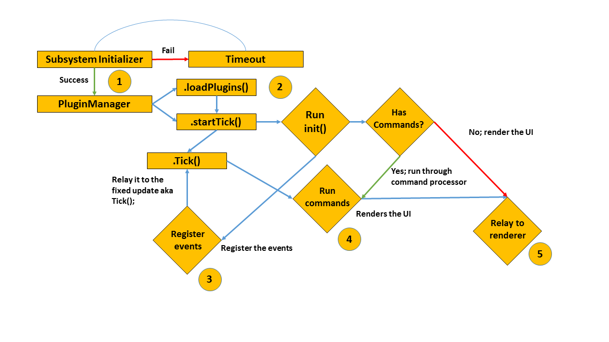

How it works
Flow Chart
The following diagram shows what happens when you start the app.

Explaination
1. Subsystem Initializer
The first step is to intialize all the subsystems. This is automatically when the program starts in the Reactive.Application namespace. This step is important as it will initialize all the required systems such as PluginManager and Renderer. The user can also request a reboot by using the developer menu under settings, this is to allow the system to reset it caches and rest itself.
If the subsystem fails to initalize, it will execute a timeout function before trying again. Usually it will try again after a few seconds in which the user would see a loading screen in the startup. (This has never happened before but we will keep running tests to ensure it stays that way)
2. PluginManager
There are a few steps the PluginManager takes when it is initialized. First is to run a check on the plugins directory to check if there are any viable modules available, if exists, it runs the loadPlugins() function which will load all the modules into memory and then calls the startTick() function.
An explaination of the functions:
loadPlugins()- loads the plugins, returns an exception if fail. The function also registers the available modules into aList<IPlugin>()list.startTick()- starts theTick()function. This is will also call thestart()functions on all the loaded modules.Tick()- a fixed update function which is thread independant and runs every +-seconds. (Not guaranteed will run every second)
The synchronous Tick() & startTick() call invokes the implemented tick() and init() function respectively in the modules main class. Developers are recommended to put important data updates here in this function. (This function is same to Unity3D C# Update() function)
3. Register the events
MALE framework works based upon an event system. Modules can leverage this event system by subscribing into a list of events from controlling what page to load to even manipulating the data on screen. Once the events are registered, it will be called once by the Tick() function.
If the module contains commands such as loading a page or opening a file, it will be registered with the Renderer and should be able to be called using javascript. Refer to CEF documentation about this.
For example:
// This is an example command in the module
public string moduleName {
get: { return "My Modules Name"; }
}
// This is an example call from javascript
Console.log(module.moduleName);
4. Run the commands
Once all the events are registered, the commands associated with the events are called. This could range from loading the resource files or calling some REST API. The language we used, C#, allows developers to easily extend their modules with NuGET packages like Google Analytics or Spotify Music API.
The commands are registered using the following function:
// This registers the commands with CEF allowing it to be called using Javascript in html
cefInstance.RegisterJsObject(moduleName, new module(cefInstance, this));
5. Render it
We've ran the commands, registered the events, and now we want to show it to the user. With CEF, this possible using html files which you can compile together with your module. Majority of our UI is made in html, for this part of the section, everything has been explained in the CEF manuals. Refer to it on how CEF works.